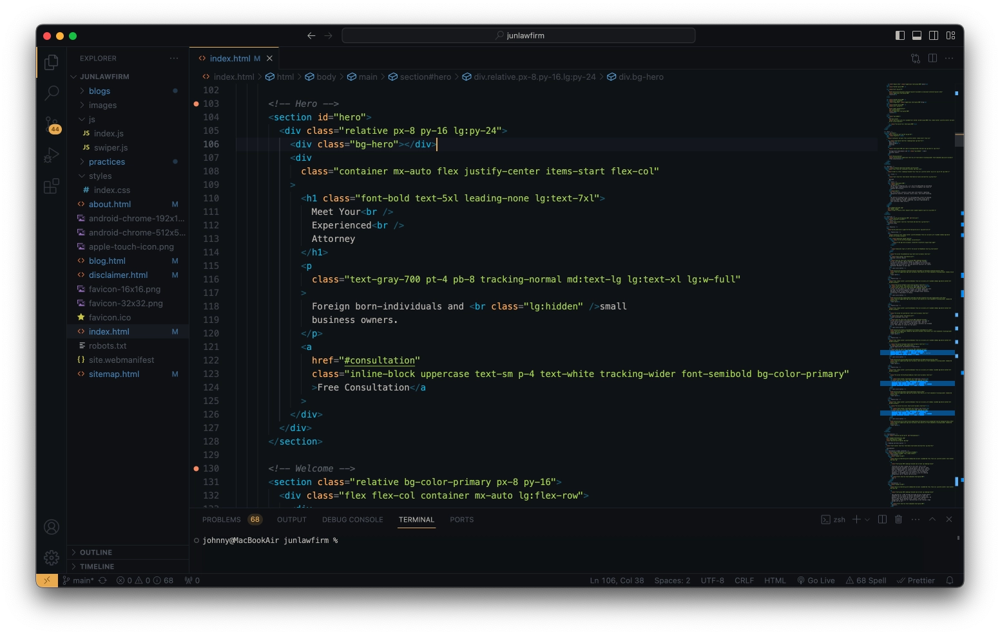

여러분은 웹사이트가 어떻게 만들어지는지 알고 계시나요? '내 알
바니?' '그걸 모르니 제작사에 맡기는 것 아니겠니?'라고 생각하실
지도 모르겠습니다 😂
맞습니다. 웹사이트 제작에 필요한 디자인, 개발 등의 기술적인 지식은
전혀 모르셔도 됩니다. 다만 웹타민은 의뢰인이 홈페이지 제작 과정에
대해 대강은 알고 있으실 것을 권장해드립니다. 그 이유는 이것을
알아야
제작사와 긴밀한 소통이
가능하기 때문입니다. 이걸 모르면 제작사의 언어를 이해할 수
없습니다. 제작사가 외국어를 쓰는 것도 아닌데 이게 무슨말인가
싶으실겁니다. 예를 들면 이렇습니다.
모 제작사: 고객님, 안녕하세요. 현재 웹사이트 디자인 시안이
완료되어 목업 전달드립니다. 이후에는 코딩으로 개발해드리고 자동화
도구를 사용해 테스팅 진행하게 됩니다. 도메인 등록은 프로젝트
마지막에 도와드리며 배포는 OO 플랫폼의 호스팅을 이용할 예정이니
참고 부탁드립니다 ^^
이게 다 무슨 말인지 이해 되시면 뒤로 가셔도 좋습니다. 아니시라면
이 글을 꼭 읽어보세요. 그리고 5분 뒤에 스크롤이 바닥에 닿으면 다시
여기로 돌아와보세요. 모 제작사의 말이 100% 이해되는 마법을
경험하실 겁니다.
다시 한번, 제작사와 소통을 하는데에 거창한 지식은 필요 없습니다.
이 글에서 다루는 얕은 지식들만 알고 계셔도 충분합니다.
그럼 웹사이트 제작이라는 숲을 가벼운 마음으로 한번
둘러보시겠습니다. 웹사이트 제작은 주로 다음의 5단계를 거치게
됩니다.
1. 구상하기

구상은 웹사이트의 목적과 컨텐츠에 대해 기획하는 단계입니다. 웹사이트 제작의 일반적인 목적은 다음과 같습니다.
- 비즈니스: 제품 및 서비스 소개를 통해 판매량 늘리기
- 개인: 실력을 증명하여 취업하기
목적을 정한 이후엔 웹사이트에 어떤 컨텐츠를 포함할지 고민합니다.
주로 제품 및 서비스 설명, 회사 소개, 포트폴리오 소개, 문의하기
등으로 구성됩니다. 이후엔 웹사이트에 필요한 정보들을 수집합니다.
필요한 정보는 각 페이지에 쓸 소개 문구, 이미지, 동영상 등이
있습니다.
구상을 해야하는 이유는 제작사와 의뢰인이 같은 곳을 바라봐야하기
때문입니다. 의뢰인의 머릿속에 있는 것들이 제작사에게 그대로 공유가
되어야 하는 겁니다. 매우 추상적이고 어려운 설명에 뒤로 가기를
유발한 것만 같습니다. 쉽게 예시를 들어보겠습니다.

웹타민은 의뢰인에게 두 가지 질문지를 드립니다. 첫번째 질문지는
기초 문답으로 구성됩니다. 의뢰인은 웹사이트의 주요 목적, 제공할 수
있는 자료, 필요한 정보 등 기본적인 정보에 대해 답하게 됩니다.
두번째 질문지는 심화 문답입니다. 내용은 기초 문답에 비해 좀 더
심화된 질문으로 이루어집니다. 의뢰인은 주요 고객층, 신규 고객 유입
경로, 타사와의 차별점 등 사업에 관련된 깊이 있는 내용을
작성합니다.
웹타민은 이것을 토대로 사업과 방문자를 심도 있게 분석합니다. 그
결과 방문자의 마음을 사로잡고 의뢰인의 목적을 달성하는 컨텐츠가
탄생하게 됩니다.
이런 과정이 생략된 단순 정보성 글은 방문자의 눈에 스쳐지나가는
문자뿐이 될 수 없습니다.
2. 디자인하기

디자인은 웹사이트의 외형을 계획하는 단계입니다. 주로 초기엔 웹사이트의 레이아웃(화면 배치)을
대강 그린 설계도를 제작하게 됩니다. 이 설계도를 와이어프레임이라고
합니다.
이후 와이어프레임을 토대로 다음과 같은 시각적인 요소들을 고민하게
됩니다.
- 색상
- 글씨체
- 여백
이 요소들을 결정하고 와이어프레임에 적용하여 디자인 모형을
제작합니다. 이 모형을 목업이라고 합니다. 목업이 필요한 이유는
고객과의 디자인 의논을 하기 위함입니다. 목업의 장점은 실제
웹사이트 디자인 개발보다 훨씬 빠르게 디자인 결과물을 만들어 볼 수
있는 점입니다.

웹타민은 디자인 도구를 이용하여 목업을 제작하고 활용합니다. 목업을
만들 때 고객이 제공한 참고 홈페이지와 디자인 트렌드를 반영합니다.
이후 완료된 목업을 통해 고객과 디자인에 관한 협의가 이루어집니다.
일반적인 웹사이트 제작 업체는 주로 이 단계에서 디자인 횟수 제한을
걸어둡니다. 총 몇 번까지만 디자인 수정이 가능하다는 식입니다.
웹타민은 고객이 만족할 때까지 무제한으로 디자인 작업을 하고
있습니다.
고객이 마음에 들지 않는 웹사이트는 방문자를 만족시킬 수
없다는 것이 웹타민의 철학입니다. 디자인 변경은 언제까지 하나요?
고객이 만족할 때까지입니다 😎
3. 개발하기

개발은 디자인과 기능을 웹사이트에 구현하는 작업입니다. 웹사이트를 개발하는 것엔 크게 두 가지 방법이
있습니다.
첫째는 웹 빌더를 이용한 방법입니다. 웹 빌더란 프로그래밍 지식
없이도 웹사이트를 만들 수 있도록 도와주는 도구입니다. 한번쯤은
들어보셨을 워드프레스, 윅스 같은 플랫폼이 바로 웹 빌더입니다.
웹 빌더는 조작이 쉽고 간편하여 대부분의 업체들이 사용하고
있습니다. 다만 일반적으로
디자인에 제한이 있기 때문에 브랜드의 고유한 정체성을 나타내는
것에 한계가 있습니다. 기능도 웹 빌더가 허용하는 범위 안에서만 개발이
가능하다는 문제점이 있습니다.
두번째는 코딩을 통한 방법입니다. 코딩이란 쉽게 말해 컴퓨터에
명령을 내리는 일입니다. 웹사이트를 제작할 때 메모장 같은
프로그램을 열어 명령어를 작성하는 방법으로 개발을 하게 됩니다.
이 방법은 전문적인 코딩 지식이 있어야하므로 접근성이 낮습니다. 웹
빌더에 비해 전문성과 시간이 요구되므로 제작 비용도 비교적
높습니다. 다만 이 방법을 선택할 경우 완벽한 맞춤형 웹사이트를
제작할 수 있습니다. 개발 가능한 디자인과 기능에 아무런 제약이 없기
때문입니다.

웹타민은 직접 코딩을 이용해 맞춤 웹사이트를 제작하고 있습니다. 그
이유는
디자인과 기능 개발에 제약이 없기 때문에 브랜드에 최적화된
웹사이트를 제작할 수 있기 때문입니다. 맞춤 웹사이트에 대해 더 알고 싶으시다면
아래 웹타민 홈페이지의 칼럼을 읽어보시길 권해드립니다.
4. 테스트하기

테스트는 웹사이트의 모든 기능이 잘 작동하는지 확인하는 단계입니다. 다음과 같은 것들을 테스트합니다.
- 모든 페이지가 잘 열리는지
- 버튼이나 링크가 잘 작동하는지
- 태블릿, 휴대폰 같은 모바일 기기에서도 잘 보이는지
- 로딩 속도가 너무 느리지는 않은지
테스트를 하는 이유는 사용자의 만족을 위해서입니다. 페이지를 여는데
3초 이상 걸리면 사용자는 뒤로 가고 싶어집니다. 휴대폰으로 보는데
글씨가 너무 작아 읽기 어렵다면 창을 닫고 싶어집니다.
이 테스트 단계를 건너뛰는 제작사들이 종종 있습니다. 그나마 오타,
디자인 실수 같은 사소한 문제라면 괜찮습니다. 하지만 중요한 링크가
누락된 경우, 버튼이 오작동 하는 경우 등의 심각한 문제들도 생길 수
있습니다. 이것을 인지하지 못하고 오랜 시간이 지나 발견하면 그
손실은 이루 말할 수 없게 됩니다.

웹타민은 오류에 있어서는 사람을 믿지 않습니다. 그 이유는 사람은
실수할 수밖에 없는 존재이기 때문입니다. 경력이 많은 개발자라도 수
많은 코드 중에 오타 하나로 오류를 만들어 낼 수 있습니다.
웹타민은 이 문제를 해결하기 위해 자동화된 테스팅 프로그램을
활용합니다. Cypress라는 도구를 이용해
사람이 놓칠 수 있는 부분들에 대해 테스트를 작성하고 진행합니다. 코딩으로 웹사이트를 제작하므로 테스트 코드 또한 제한 없이
세밀하게 작성이 가능합니다. 웹타민의 홈페이지가 버그 없이 견고한
이유입니다 😁
5. 배포하기

여기까지 이탈하지 않고 읽고 계시는 여러분은 현명한 사람입니다 👍
마지막으로
배포하기는 웹사이트를 모든 사람들이 볼 수 있도록 인터넷에
등록하는 단계입니다. 다른 사람이 여러분의 웹사이트를 보기 위해서는
도메인과 호스팅이란 것이 필요합니다.
도메인이란 웹사이트의 주소입니다. 예를 들어 https://webtamin.co/은
웹타민의 도메인입니다. 원하는 웹사이트 주소를 등록하기 위해서는
그에 따른 비용을 지불하게 됩니다.

호스팅이란 웹사이트 공간 임대 서비스입니다. 웹사이트는 글, 이미지,
영상 등의 파일들로 이루어져있습니다. 다른 사람도 웹사이트를 보기
위해서는 이 파일들이 인터넷상에 존재해야 합니다. 그러기 위해서는
이 파일들을 담을 인터넷상의 공간이 필요합니다. 이 공간을 서버라고
합니다. 호스팅은 이 서버를 빌려주는 서비스를 말합니다.
일부 악덕 웹사이트 업체들은 호스팅 서버에 대해 과도한 요금을
청구하는 경우가 있습니다. 실제로 발생하는 금액보다 더 큰 금액을
요구하기도 합니다. 고객은 이런 기술적인 부분을 알 수 없어 모르고
당하게 될 수 있습니다.

웹타민은 Netlify라는 무료 호스팅 플랫폼을 이용합니다. 무료로 이용
가능한 트래픽(웹사이트 방문자 수) 한도를 초과하는 경우에만 그에
상응하는 금액이 부과됩니다. 도메인 비용도 실제 발생 비용을
보여드리고 그에 맞는 요금만을 부과합니다. 웹타민은
모든 제작 비용에 대해 투명성을 원칙으로 하고 있습니다.
지금까지 웹사이트 제작 과정 5단계를 살펴보았습니다. 업체마다
진행하는 순서나 세부사항은 다를 수 있습니다. 웹사이트 제작 과정에
대한 대략적인 기초 지식을 얻으신 것을 축하드립니다 👏
웹사이트 제작에 관해 궁금한 점이 있거나 의뢰를 원하시면
문의해주세요.